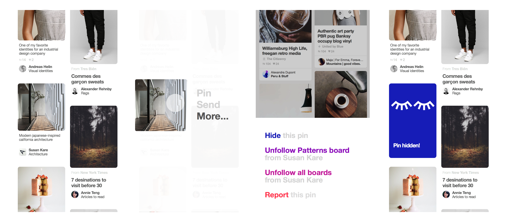
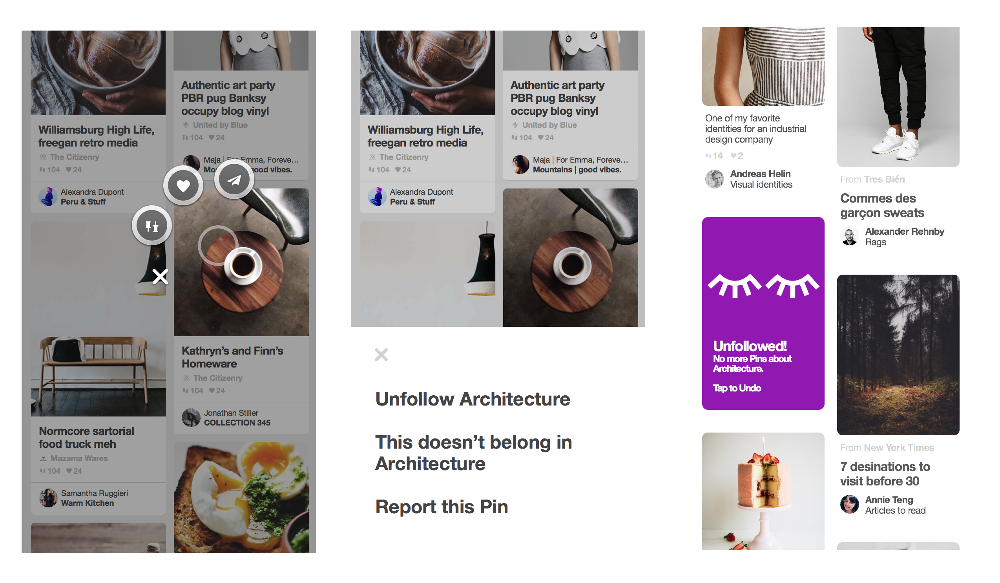

Personal taste is complicated. Pinterest is a great source for finding new things that are in line with your taste by learning from the signals of what you like. But sometimes they get it wrong!
My task was to design a way for Pinners to tell us "I want to keep getting
recipe suggestions, but I just don't eat meat." or "I do like fashion,
but I'd never wear this dress."
So I started by designing systems where users could pinpoint the exact thing about a Pin
they didn't like, and letting them tell us how to recommend better pins. For me, this lent itself
to tappable bubbles - almost like popping the bubbles that didn't represent you.
But this kind of feedback was so specific, that we had to
build a bridge from the current way of interacting to a future and ideal one. This meant
baking it into the contextual menu, where users have previously found editing functionality.

Then the task was having the ideal in mind while still designing for the current
look and feel of the app. We were testing an assumption and mapping out a
possible future.
